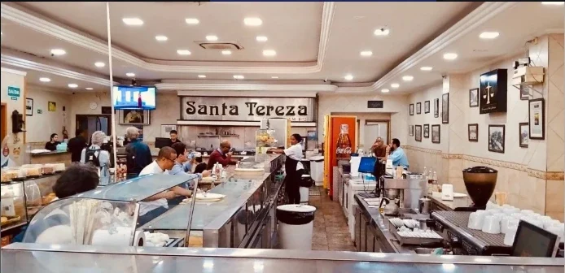
Térreo, até 120 clientes
O balcão
Atendimento no estilo das antigas padarias paulistanas. Café, salgados clássicos e o movimento do Centro passando pela porta.
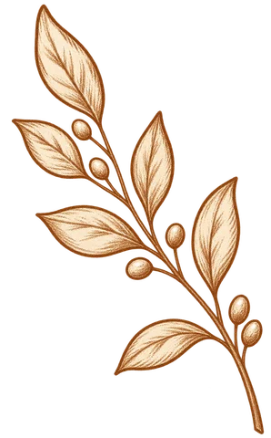
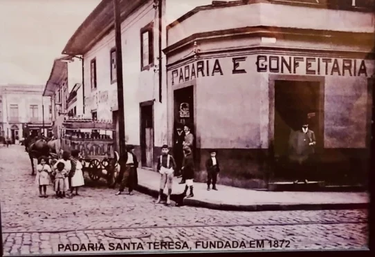
Abrimos as portas na época do Império, com pães, caldos e canjas. A cidade mudou em volta, e a casa continua na Praça Dr. João Mendes, recebendo gerações com o mesmo cuidado de sempre. Esta foto fica pendurada no nosso salão.
Não é coxinha. É uma coxa de frango inteira e suculenta, envolvida num creme de galinha aveludado, empanada e frita até ficar dourada e crocante por fora. Uma receita que virou o símbolo da casa.
“É de comer rezando.”Quem prova, entende.
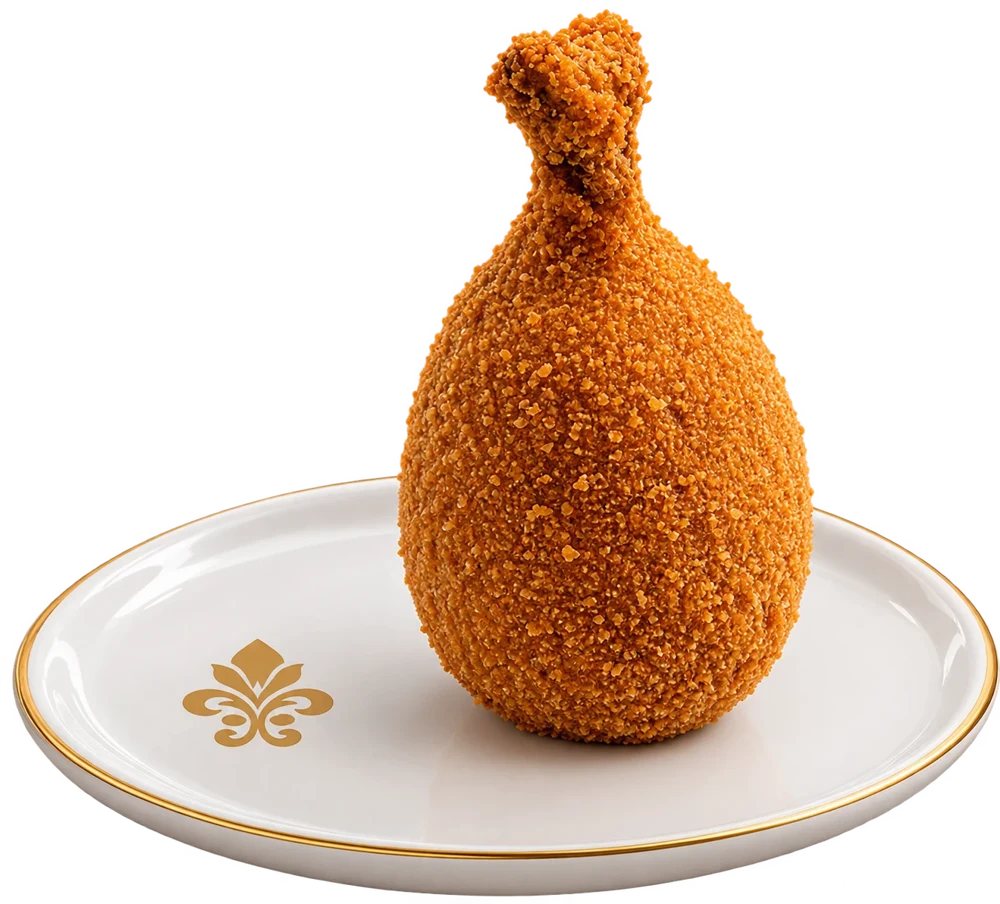
Do café rápido em pé ao almoço sem pressa, cada canto da casa tem seu ritmo.

Térreo, até 120 clientes
Atendimento no estilo das antigas padarias paulistanas. Café, salgados clássicos e o movimento do Centro passando pela porta.
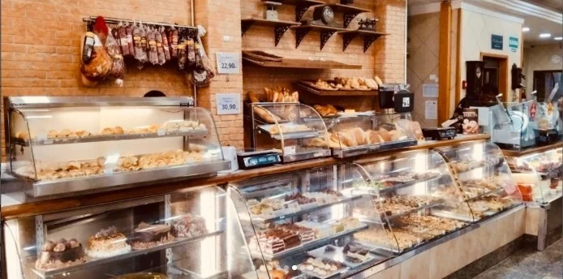
Onde muita gente começa o dia. Fornadas feitas com as receitas da casa, para comer aqui ou levar.
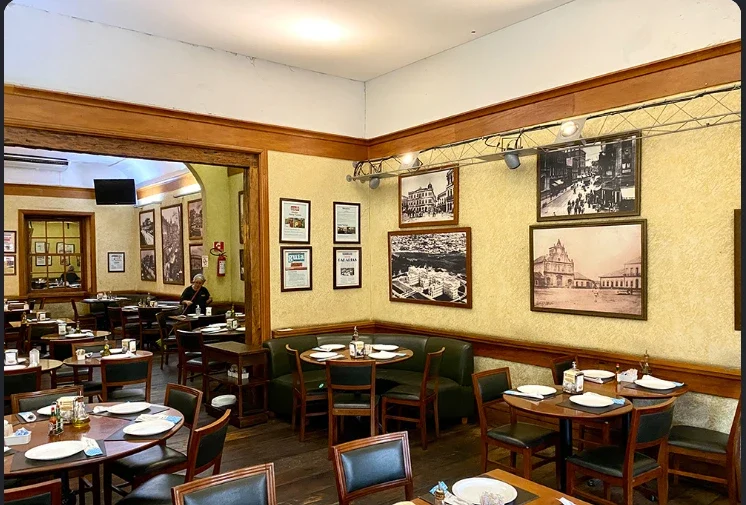
Paredes com fotografias da São Paulo antiga, madeira escura e mesas postas para quem quer sentar com calma.
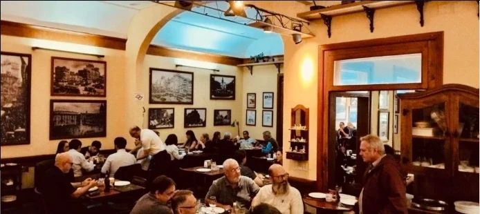
Piso superior, até 170 pessoas
Salão amplo e aconchegante para almoços, encontros e comemorações, com pratos consagrados da culinária paulista.
Estamos a poucos passos do marco zero da cidade. Janela aberta, mesa posta e a cúpula da Sé entre as árvores da praça: um brinde que só o Centro Histórico oferece.
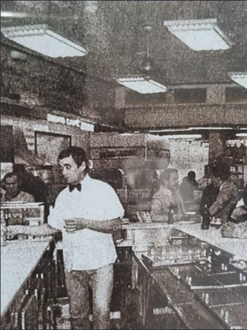
Por aqui passaram avós, pais e netos. Profissionais do Fórum, fiéis da Catedral, turistas e moradores do Centro dividem o mesmo balcão há mais de um século e meio.
A Santa Tereza aprendeu a se reinventar sem perder o jeito de sempre: pão fresco, atendimento de balcão e receitas que marcaram época.
Tradição que atravessa gerações
De segunda a sábado, o almoço ganha um especial. Escolha o dia para ver o prato.
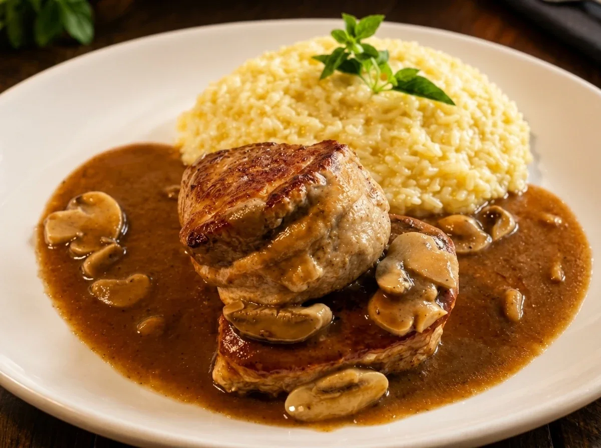
Toda segunda-feira
Medalhão de filé mignon suíno ao molho madeira, servido com risoto de parmesão.
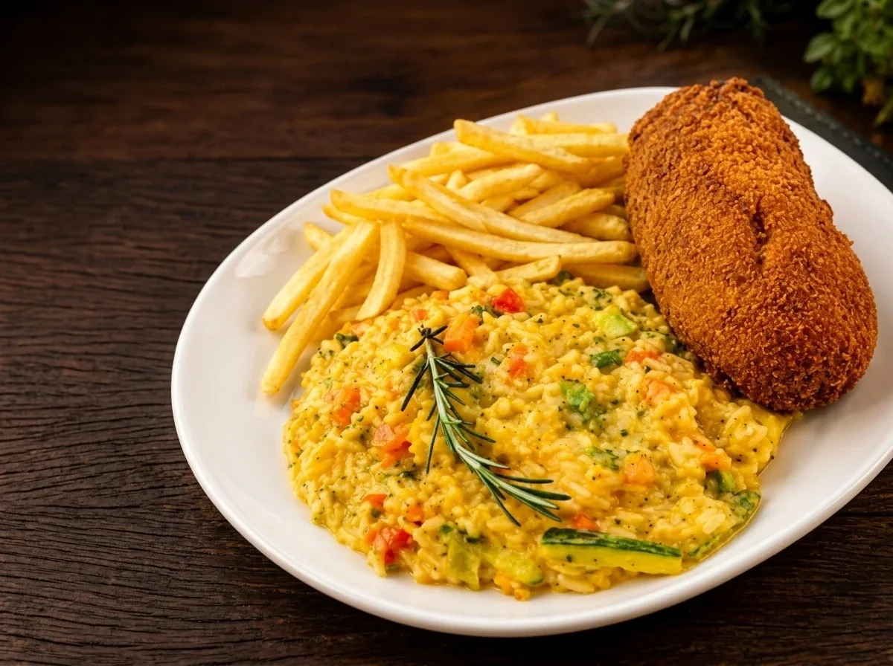
Toda terça-feira
Frango empanado, recheado de presunto e queijo, acompanhado de risoto de abobrinha e fritas.
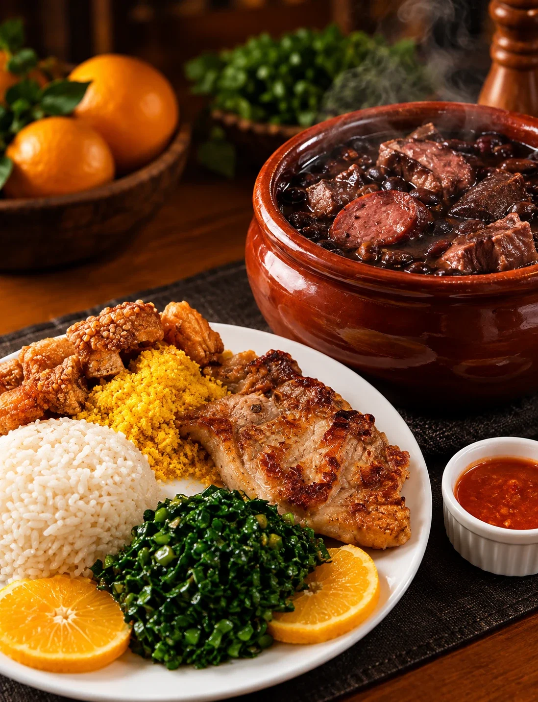
Toda quarta e todo sábado
Feijoada completa, servida com bisteca, farofa, laranja, banana, couve e molho de pimenta.
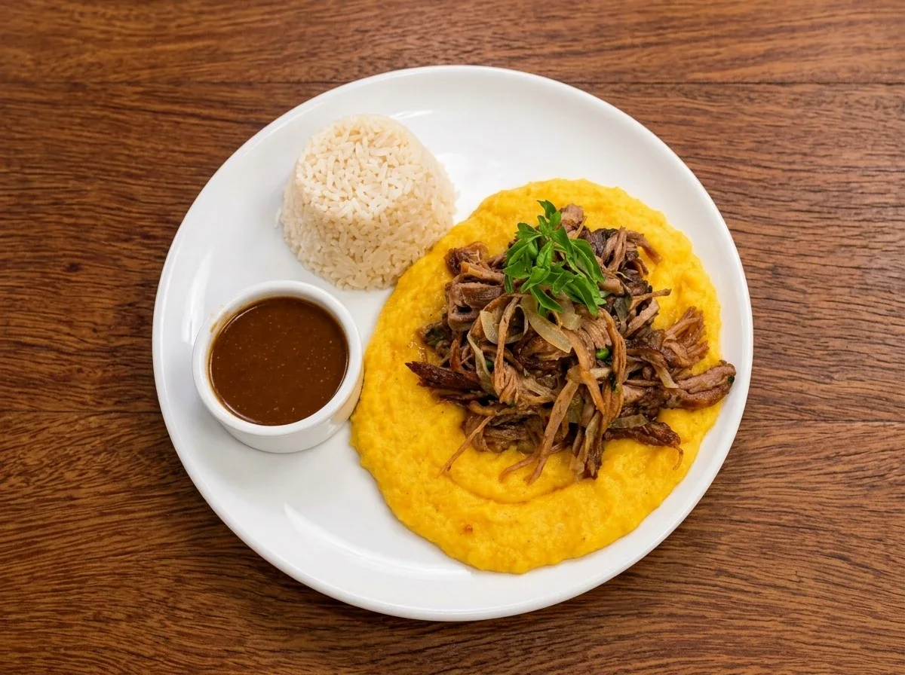
Toda quinta-feira
Cupim desfiado ao molho, acompanhado de purê de mandioquinha e arroz.
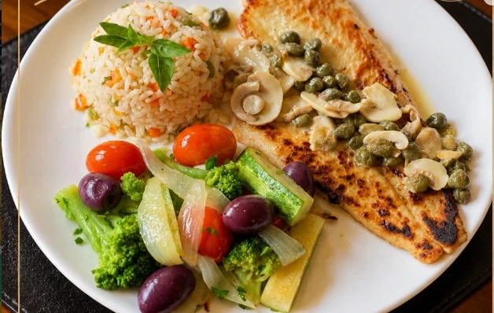
Toda sexta-feira
Saint Peter com arroz à grega e legumes.
Da canja de 1872 à Coxa Creme, receitas que atravessam gerações no balcão e no restaurante.
O carro-chefe. Coxa de frango inteira, creme de galinha e casquinha crocante.
Um dos pratos mais pedidos do andar de cima.
Diferentes versões para acompanhar ou virar o prato principal.
Pão francês, pães especiais, doces e frios no balcão.
Servido do jeito das antigas padarias paulistanas, para começar o dia ou fechar o almoço.
O cardápio completo fica na entrada da padaria e no nosso Instagram.
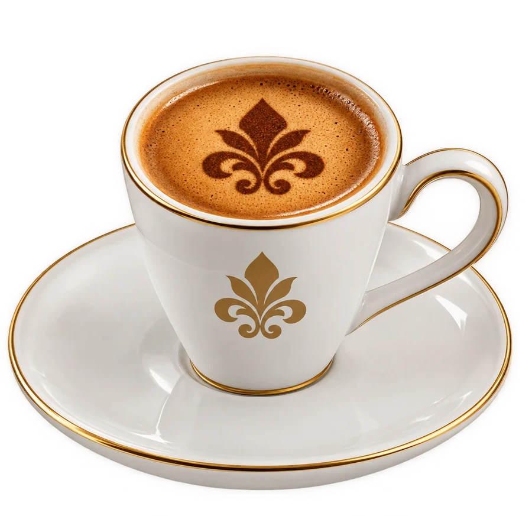
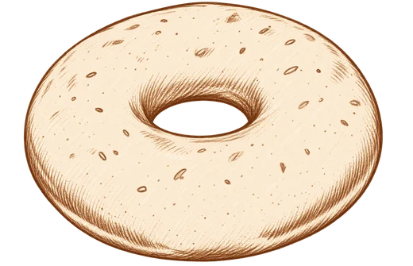
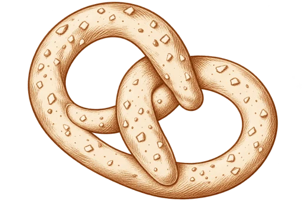
Cada fatia carrega mais de um século e meio de tradição e carinho. Das receitas clássicas aos sabores mais pedidos, nossos doces são feitos para adoçar o seu dia.
Na vitrine tem bolo de chocolate com granulado, maracujá, red velvet e coco, além de tortas de red velvet, morango e chocolate com cereja.
Perguntar pelo WhatsApp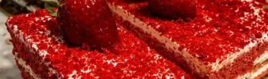
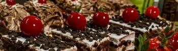
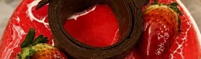
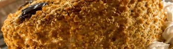
Tradição que atravessa gerações, sabor que fica na memória
Recebemos casamentos, aniversários e confraternizações nos nossos salões. Montamos o cardápio com você, dos salgados clássicos à mesa de doces.
A poucos passos da Catedral da Sé, do Fórum João Mendes e da estação Sé do Metrô.